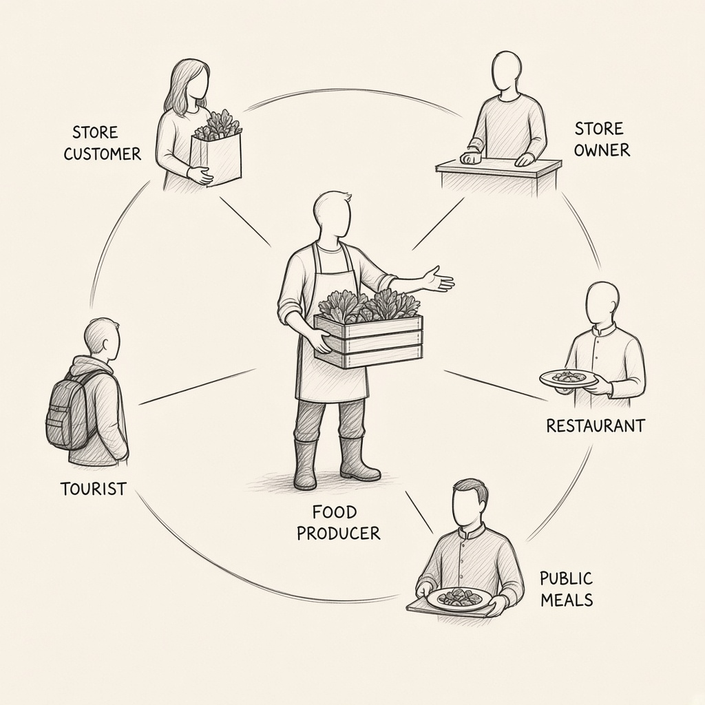

01 · The idea
The overarching canopy highlighting the critical importance of regional food resilience and the value of Arctic culinary craftsmanship, uniting all actors across the ecosystem.
One motherstory, and three understories for the people who can champion regional food.

Narrative
Narrative architecture
Statement
Mission and vision
Our mission is not to invent yet another food portal, an exclusive calendar, or a new app competing with what already exists. There are already dedicated pioneers, local initiatives, and micro-marketplaces out there. Our vision is instead to act as a catalyst and an orchestrator: setting a shared direction, building a strong narrative, and establishing a few clear anchor points—and then inviting the ecosystem to fill it with content.
A lever for the community champions. Our role is to create a shared lever. By establishing a compelling narrative and a handful of focal dates (such as four seasonal anchor days per year), we build a stage where other actors can easily attach their own initiatives under the same umbrella.
Low threshold for the giants – broader reach for the small. By keeping the concept extremely lean, we make it effortless for more rigid, large-scale actors (like municipal kitchens and retail grocery chains) to participate, while simultaneously giving regional food artisans and local enthusiasts a shared megaphone.
Understory
The everyday consumer
Fun theory and edutainment. Challenges everyday shoppers to break out of grocery autopilot through fun-theory and edutainment interventions. It transforms products into tangible storytellers of artisan craft—pairing a shared mark of authenticity with an invitation to explore the regional food landscape as a culinary traveler.
Understory
Public procurement and institutional innovation
Civic preparedness. Engages institutional buyers, meal planners, and municipal policymakers to pioneer flexible framework tenders, Dynamic Purchasing Systems (DPS), and regulatory adaptations—using civic preparedness and food security as primary catalysts.
Understory
From ego to ecosystem
Shifts the narrative from the isolated smallholder to a connected collective that speaks as a unified ‘WE’. By coordinating social campaigns, co-hosting creator takeovers, cross-promoting products, and sharing audiences, producers turn culinary craft into a shared sales magnet rather than a lonely marketing battle.